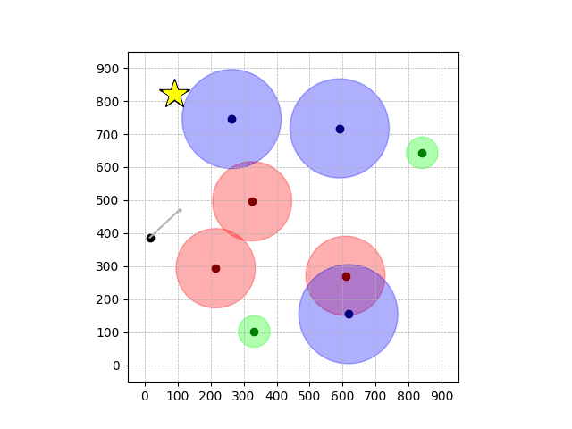
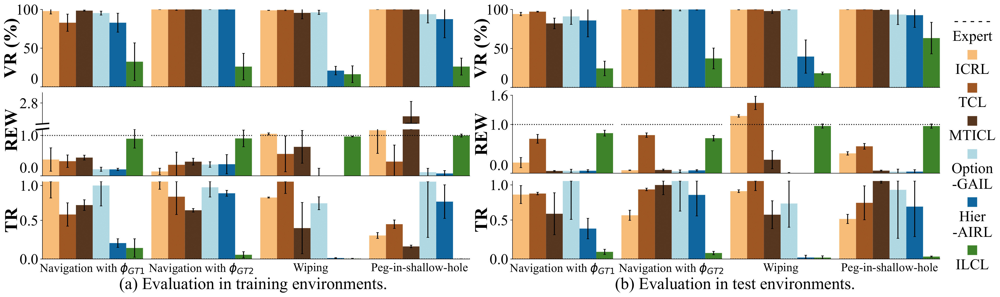

We aim to solve the problem of temporal-constraint learning from demonstrations.
Learning logic constraints is challenging due to the combinatorially large space of possible specifications and the ill-posed nature of non-Markovian constraints.
To this end, we propose ILCL, which learns truncated linear temporal logic (TLTL) constraint by tree-based genetic algorithm (GA-TL-Mining) and logic-constrained RL (Logic-CRL) with constraint redistribution.
Our evaluations show ILCL outperforms baselines in learning and transferring TL constraints across simulated scenarios, demonstrating the transferability of our method in real-world peg-in-shallow-hole environments.
Method
ILCL learns constraints via a two-player zero-sum game.
The constraint player, GA-TL-Mining, searches for the logic constraint that maximally penalizes the policy player's trajectories while labeling demonstrations as safe, by applying a genetic algorithm on the abstract syntax tree space of the temporal logic.
The policy player, Logic-CRL, optimizes a policy that maximizes the reward while satisfying the constraint player's temporal logic constraint, by redistributing the continuous logic constraint.
Results
Demonstrations in Simulated Environment
Navigation with φGT1
Navigation with φGT2
Wiping
Peg-in-shallow-hole
Demonstrations maximize the following goal rewards and satisfy the following constraints:
Goals
Navigation with φGT1: Reach to the goal (★)
Navigation with φGT2: Reach to the goal (★)
Wiping: Reach to the green flag
Peg-in-shallow-hole: Insert peg to the hole
Constraints
Navigation with φGT1: Avoid R and avoid B until in G
Navigation with φGT2: Reach R → G → B
Wiping: Avoid contact until reaching the red flag and fc > threshold afterwards
Peg-in-shallow-hole: As tilted peg contacts to the hole, maintain peg-to-hole contact and peg-to-jaw contact until insertion
Transfer Results
Navigation with φGT1 Transfer

Navigation with φGT2 Transfer
Wiping Transfer
Peg-in-shallow-hole Transfer
Statistical Evaluation

ILCL finds policies that achieve the lowest violation rate w.r.t the GT constraints, expert-level cumulative reward, and the lowest TR (truncated negative robustness).
Real-world transfer of the learned constraint (Peg-in-shallow-hole)